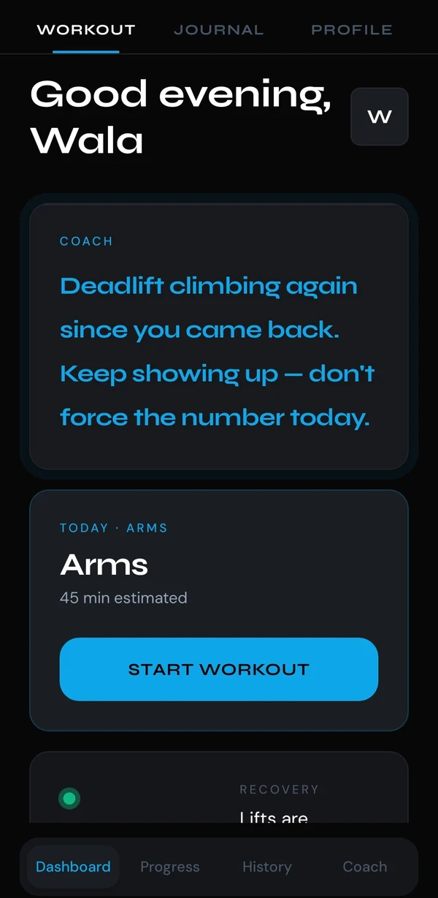
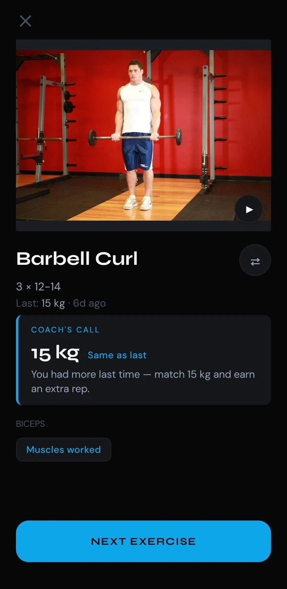
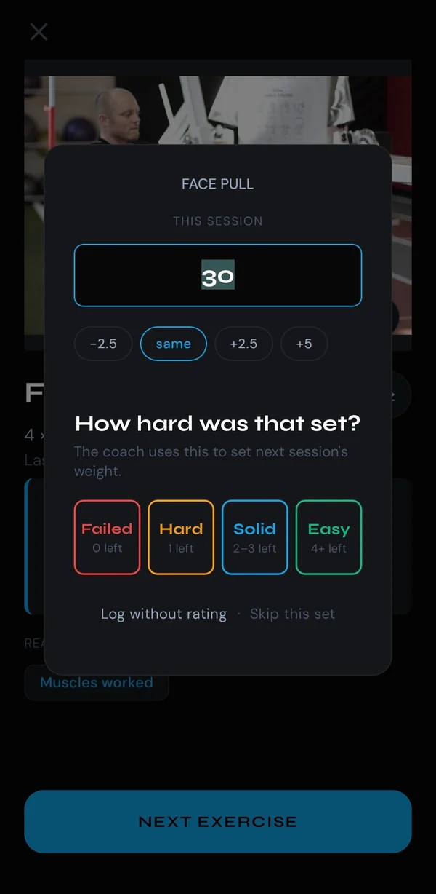
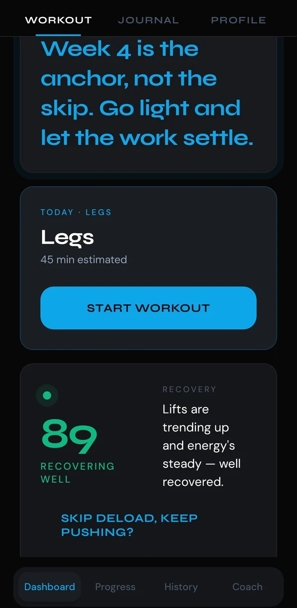
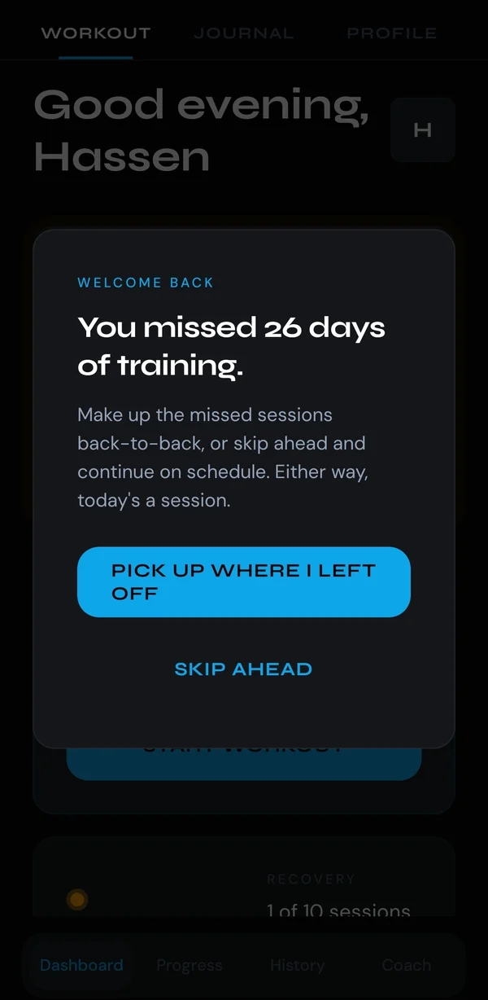
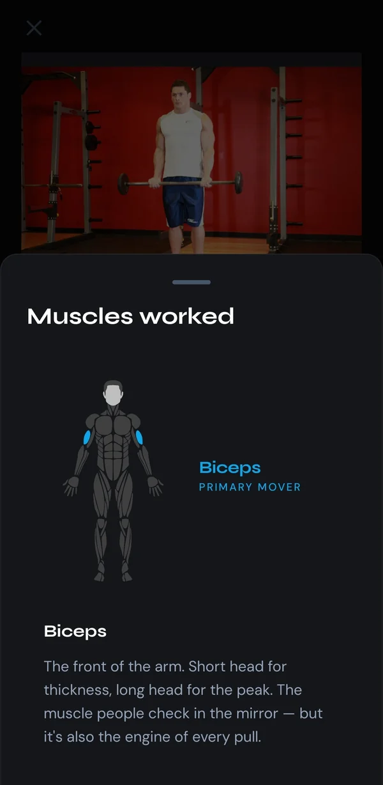

A coach in your pocket — not another spreadsheet.
Intr prescribes the weight for your next set, reads the trend across weeks instead of judging you on a single day, and rebuilds your plan when life gets in the way. Every decision comes with the reasoning behind it — drawn from your own numbers. It's live today in early access — the core works now, and it's still being built in the open.

Training apps fail in two directions.
Both of them end the same way — you stop opening the app, and you blame yourself for it.
The rigid spreadsheet
A fixed program that has no idea what happened in your last four sessions. It tells you to squat heavy on four hours of sleep and calls it discipline. When the plan and your body disagree, the plan wins — every time, because it can't see you.
The slot machine
Streaks, badges, broken-chain shame, a push notification engineered to make you feel bad at 9pm. It's very good at making you open the app and very bad at making you stronger. Miss a week and the product's answer is guilt.
Built for lifters, not spreadsheets.
If you train with weights and want the reasoning behind every number, Intr fits — wherever you're starting from.
Beginners who want a real plan
You don't need to know what a mesocycle is. Answer a few questions and Intr picks the split, the exercises, and the starting weights — then explains each choice as you go.
Intermediates done guessing
You know how to train, but you're tired of picking weights by feel. Intr prescribes the number, reads the trend across weeks, and adjusts before you stall.
Anyone whose life gets in the way
Gym or home, six days or two, a clean month or a missed week — the plan reshapes around what actually happened instead of guilting you for it.
One loop, running quietly under everything.
Nothing in Intr is a black box. Every number it gives you can be traced back to a set you actually logged.
You log the set, and how it felt
Weight, reps, and one tap: Failed · Hard · Solid · Easy. That last tap is reps left in reserve — one of the most useful signals in autoregulated training, and one most apps never bother to collect.
The coach does the arithmetic
Load progression, per-lift strength trend, adherence, energy, and where you sit in your mesocycle. It's deterministic, unit-tested code — not a language model guessing at your squat. Same inputs, same answer, every time.
Tomorrow's session changes
The weight on the bar, the volume in the week, whether you deload — all move to match what the data says. And it tells you which of your numbers moved it, in a sentence you can argue with.
One take, start to finish.
No cuts, no mockups, no sped-up footage. Open the app, start the session, log the sets, finish — the whole loop in under two minutes.
Nothing loads from YouTube until you press play. Watch on YouTube instead
Five things it does that most training apps don't.
Every screen below is a real capture from the build on Google Play.
It tells you how heavy to go. And why.
Open any exercise and the weight is already chosen — a specific number, not a rep range and a shrug. Under it sits the reasoning, written from your own history: what you lifted last time, what you left in the tank, and what that means for today.
The maths is APRE-style autoregulation. Leave reps in reserve and the load climbs. Hit true failure and it holds or backs off. Report low energy and it can only pull the number down — never up, because a good mood is not a reason to add weight.
- Goal-aware ladders — strength, muscle, or general each progress differently
- Reps climb inside the band before the bar gets heavier
- Every prescription is overridable — it's advice, not a lock

Four words, and the whole engine has what it needs.
After each set: How hard was that set? Failed, Hard, Solid, Easy — mapped to reps in reserve. It takes under a second, and it's the input that separates a logbook from a coach.
Weight adjustment is right there too: −2.5, same, +2.5, +5, or type your own. No fiddling with a keyboard mid-rest. And if you'd rather not rate it, “Log without rating” is always there — the app degrades to a plain logbook rather than nagging you.
- Full-screen rest timer with a countdown ring between sets
- Swap any exercise mid-session — it sticks for every future day of that type
- PRs detected and surfaced the moment you finish

It reads the trend. Not the day you had.
Most “readiness” scores punish you for training hard yesterday. Intr's can't — by construction, it has no same-day input at all. It looks at a rolling two-to-three week window: strength delta per lift, adherence, repeated low energy, repeated missed effort targets.
Every fatigue signal needs to happen twice before it counts. One rough session is just a rough session. And the read is never a mystery number — it names the inputs that produced it.
- 🟢 Recovering well · 🟡 Holding steady · 🔴 Backing off
- Trending strong? Offers to skip the scheduled week-4 deload
- Trending down? Offers to pull a deload early
- Both are a tap you accept. Nothing rewrites your plan behind your back

Miss a week and you get a plan, not a guilt screen.
Life happens. When you come back after a gap, Intr counts what you actually missed and offers you two real choices: make up the backlog back-to-back, or skip ahead and stay on schedule. Either way, today is a session.
Resuming isn't a naive shift. It regenerates your plan from your true position in the rotation — a missed legs day continues to push, not back to chest — using the same generator that built the plan in the first place. No orphaned days, no drift.
- Nothing is lost, nothing is shamed, no chain to break
- Recovery sessions count toward consistency — resting isn't a failure
- A corrupted or stale week self-heals to the canonical plan on next open

You should leave knowing more than your total.
Tap Muscles worked on any exercise and you get an anatomical figure with the working region lit up, plus a plain-English explanation of what that muscle actually does — and why this movement hits it the way it does.
The catalog carries 104 exercises, each with a video demonstration, equipment, difficulty, and sub-region emphasis where it matters — upper chest versus lower, rear delts versus side. Home and gym are both first-class: tell Intr where you're training and the selection changes.
- A video demo on every exercise in the catalog
- Primary movers highlighted per movement, not per body part
- Written for lifters, not copied out of a textbook

The parts you only notice when they're missing.
Works with no signal
Your plan lives on the device and reads from there first. Basement gyms, aeroplanes, dead Wi-Fi — the session runs. Sync catches up when the network does, and a failed sync never loses a logged set.
Swaps that stick
Bench press bench taken? Swap it. Intr rewrites every upcoming day of that type with your choice, carries the right set count, and quietly expires the swap at the next training block so you're not stuck with it forever.
PRs found for you
Every personal record is detected automatically from your logged sets — including first-time lifts — and surfaced the moment you finish. Prehab and recovery work is excluded, so a 5 kg warm-up never masquerades as a milestone.
A split you didn't have to pick
Tell Intr how many days you can train and it assigns the right structure — full body, upper/lower, push-pull-legs, or a bro split. Change your schedule and it re-derives. No programme shopping, no forum arguments.
A journal that gets read
Log how a session felt, what hurt, what clicked. It isn't a diary that disappears — the coach draws on it, and a nightly reflection prompt gives you something specific to answer instead of a blank box.
Notifications you asked for
One reminder, at a time you choose, only if you turn it on. It's cancelled the second you finish training. No streak-anxiety pings, no re-engagement campaigns, no 9pm guilt.
Progress you can actually see
Per-lift strength trends, volume by muscle group, session history with every set you've ever logged. The Progress and History tabs are the receipts behind every claim the coach makes.
Recovery sessions that count
Mobility and prehab days are real sessions in Intr. They count toward consistency but are invisible to load progression and PR detection — so resting properly never drags your numbers down.
Blocks, not endless weeks
Training is organised into mesocycles with a built-in deload week, and your primary compounds stay fixed across a block so progression has something stable to measure. Variety lives in the accessories, where it belongs.
Built to respect you.
These aren't aspirations. They're constraints — the kind that are easy to keep now and expensive to break later, which is exactly why they're written down.
One honest footnote
There is a consistency streak on the dashboard, and it's worth being precise about what it is: recovery days count toward it, it never punishes you when it ends, and the single reminder it can send is off unless you turn it on. It's a count of your work, not a chain you're afraid to break. Naming that seemed better than pretending it wasn't there.
Shipped, next, and later.
Intr is built by one person, in the open. Here's the honest state of it.
The Android app, and the whole training engine
Adaptive plan generation, Coach's Call load prescription, Training Status with tap-to-accept deloads, gap recovery, exercise swaps, PR detection, journal, offline-first sync. Live on Google Play today — a real, working build you can install now, not a mockup. It's early and still rough in places, and it's getting sharper with every release.
Intr for iPhone
The most requested thing since launch. A full native-quality iOS release built on the same cross-platform foundation — the complete training engine, not a cut-down port — with a TestFlight beta before general release.
Estimated 1RM curves
The progress is already buried in your logged sets. This surfaces it: every lift plotted over time with an estimated one-rep-max curve, so you can see the slope rather than infer it.
Apple Health & wearables
Today Intr reads your multi-week trend but has no same-day signal — deliberately, because self-reported energy is noisy. Sleep and HRV patch that blind spot honestly, as an additional input that can prescribe lighter today, never as the only voice in the room.
Shared training plans
Train the same plan as a friend and stay in sync even when one of you misses days. Accountability from a person who knows you — not a leaderboard of strangers.
What's shipped recently
- v1.1 — purchases updated to meet Google Play's latest billing-SDK requirements.
- Onboarding — rebuilt with smoother animation, unified plan-selection cards, and a bro-split option.
- Workout flow — full-screen rest timer with a countdown ring, a gold PR list, and a muscles-worked reveal at the finish.
- This site — legal moved to the footer, a permanent contributors page, and clearer early-access framing.
The things people actually ask.
Is it really free?
Is there an iPhone version?
Do I need to be experienced to use it?
Can I change what it gives me?
Is it an AI app?
What happens to my data?
Who builds this?
Train with something that explains itself.
Free on Android. No ads, no data selling, no streak you're scared to break. Just a coach that shows its work.